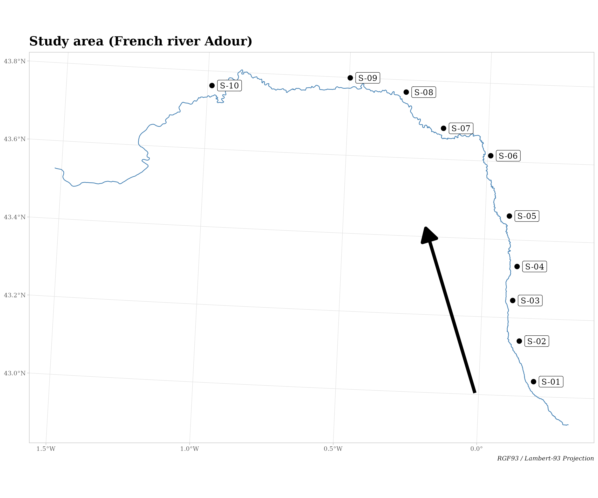

The aim of the package bridge is to […]
First let’s define a custom theme for the ggplot2 visualizations.
custom_theme <- function() {
theme_light() +
theme(plot.title = element_text(face = "bold", family = "serif", size = 18),
plot.caption = element_text(face = "italic", family = "serif"),
axis.title = element_blank(),
axis.text = element_text(family = "serif"))
}Provided data
The package bridge comes with two datasets:
-
Adour river, an
sfspatial object of typeLINESTRINGproviding the geometry of the French river L’Adour; -
Adour sites, a
data.framewith sites labels and sites coordinates along the river.
Adour river
Let’s import the Adour river spatial layer.
# Load the spatial layer of Adour river ----
path_to_file <- system.file("extdata", "adour_lambert93.gpkg", package = "bridge")
adour_river <- sf::st_read(path_to_file, quiet = TRUE)
head(adour_river)
#> Simple feature collection with 1 feature and 1 field
#> Geometry type: LINESTRING
#> Dimension: XY
#> Bounding box: xmin: 334324.8 ymin: 6207072 xmax: 480886.8 ymax: 6308530
#> Projected CRS: RGF93 / Lambert-93
#> river_name geom
#> 1 L'Adour LINESTRING (480886.8 620722...This layer is an sf spatial object of type LINESTRING and contains one single row (geometry) defined in the RGF93 / Lambert-93 projection.
Now let’s import a base map of France to locate the Adour river using the package rnaturalearth.
# Import France departments ----
france <- rnaturalearth::ne_states("france", returnclass = "sf")
# Remove overseas territories ----
france <- france[grep("^FR\\.", france$code_hasc), ]
# Project layer to RGF93 / Lambert-93 system ----
france <- sf::st_transform(france, sf::st_crs(adour_river))Let’s locate the Adour river of the France map.
ggplot(data = france) +
geom_sf(fill = "lightgray", col = "white", size = 0.2) +
geom_sf(data = adour_river, col = "steelblue") +
labs(title = "The French river Adour",
caption = "RGF93 / Lambert-93 Projection") +
custom_theme()
Adour sites
Let’s import the Adour sites data representing survey sites around the Adour.
## Load the dataset of sites ----
path_to_file <- system.file("extdata", "adour_sites_coords.csv",
package = "bridge")
adour_sites <- read.csv(path_to_file)
adour_sites
#> site longitude latitude
#> 1 S-01 470911.2 6219515
#> 2 S-02 466841.1 6231099
#> 3 S-03 464962.6 6242684
#> 4 S-04 466215.0 6252389
#> 5 S-05 464023.4 6266791
#> 6 S-06 458701.0 6284011
#> 7 S-07 445238.4 6291838
#> 8 S-08 434593.6 6302169
#> 9 S-09 418626.3 6306239
#> 10 S-10 379177.9 6304048[…]
Let’s convert this data.frame into an sf object of type POINT.
# Convert data.frame to sf object ----
adour_sites_sf <- sf::st_as_sf(adour_sites, coords = 2:3, crs = "epsg:2154")
adour_sites_sf
#> Simple feature collection with 10 features and 1 field
#> Geometry type: POINT
#> Dimension: XY
#> Bounding box: xmin: 379177.9 ymin: 6219515 xmax: 470911.2 ymax: 6306239
#> Projected CRS: RGF93 / Lambert-93
#> site geometry
#> 1 S-01 POINT (470911.2 6219515)
#> 2 S-02 POINT (466841.1 6231099)
#> 3 S-03 POINT (464962.6 6242684)
#> 4 S-04 POINT (466215 6252389)
#> 5 S-05 POINT (464023.4 6266791)
#> 6 S-06 POINT (458701 6284011)
#> 7 S-07 POINT (445238.4 6291838)
#> 8 S-08 POINT (434593.6 6302169)
#> 9 S-09 POINT (418626.3 6306239)
#> 10 S-10 POINT (379177.9 6304048)Finally, let’s map these sites and the Adour river.
ggplot(data = adour_river) +
geom_sf(col = "steelblue") +
geom_sf(data = adour_sites_sf, shape = 19) +
ggsflabel::geom_sf_label(data = adour_sites_sf, aes(label = site), size = 4.5,
nudge_x = -7500) +
labs(title = "Study area (French river Adour)",
caption = "RGF93 / Lambert-93 Projection") +
custom_theme()
TO REVIEW
From the sites labels, we will create an adjacency table based on a degree 1 of neighborhood. This means that a site is linked to the first next site (upstream) and also to the first previous site (downstream).
Important: as the sites have a direction (along the Adour river, from upstream to downstream), the order of the sites must be found in the sites labels.
For instance, in our dataset, the sites are labelled as S-01, S-02, …, S-10. This means that the most upstream site is S-01 and the most downstream is S-10.
But be aware that ordering characters can have some unwanted effects, especially if they contain numbers.
For instance,
# Alphanumerical ordering ----
sites <- c( "s1", "s2", "s11", "s10")
sort(sites)
#> [1] "s1" "s10" "s11" "s2"
# Natural ordering ----
sites <- c("s01", "s02", "s11", "s10")
sort(sites)
#> [1] "s01" "s02" "s10" "s11"You may want to code your sites as in the second example, i.e. based on a Natural ordering.
Let’s create this adjacency table with the function bridge::edges_list()
# Retrieve nodes (from nodes vector) ----
adour_nodes <- nodes_list(adour_sites$"site")
adour_nodes
#> [1] "S-01" "S-02" "S-03" "S-04" "S-05" "S-06" "S-07" "S-08" "S-09" "S-10"
# List of edges with degree 1 of neighborhood ----
adour_edges <- edges_list(adour_nodes, degree = 1)| edge_id | edge | from | to |
|---|---|---|---|
| E-1 | 1 | S-01 | S-02 |
| E-1 | 1 | S-02 | S-01 |
| E-2 | 1 | S-02 | S-03 |
| E-2 | 1 | S-03 | S-02 |
| E-3 | 1 | S-03 | S-04 |
| E-3 | 1 | S-04 | S-03 |
| E-4 | 1 | S-04 | S-05 |
| E-4 | 1 | S-05 | S-04 |
| E-5 | 1 | S-05 | S-06 |
| E-5 | 1 | S-06 | S-05 |
| E-6 | 1 | S-06 | S-07 |
| E-6 | 1 | S-07 | S-06 |
| E-7 | 1 | S-07 | S-08 |
| E-7 | 1 | S-08 | S-07 |
| E-8 | 1 | S-08 | S-09 |
| E-8 | 1 | S-09 | S-08 |
| E-9 | 1 | S-09 | S-10 |
| E-9 | 1 | S-10 | S-09 |
We can convert this table to an adjacency matrix with function bridge::adjacency_matrix().